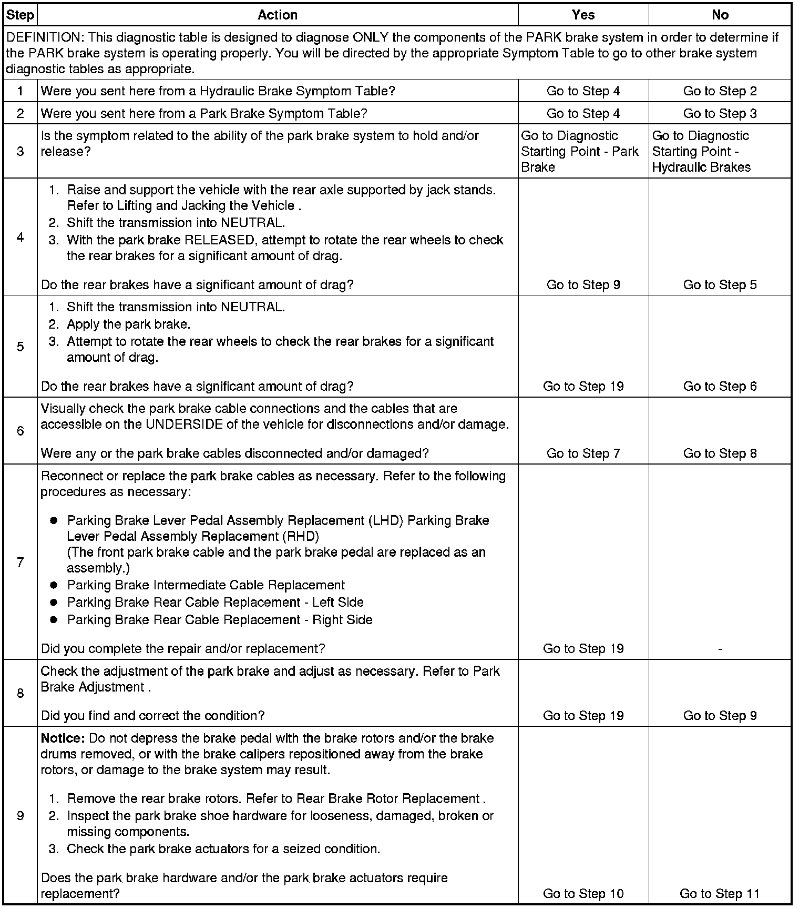
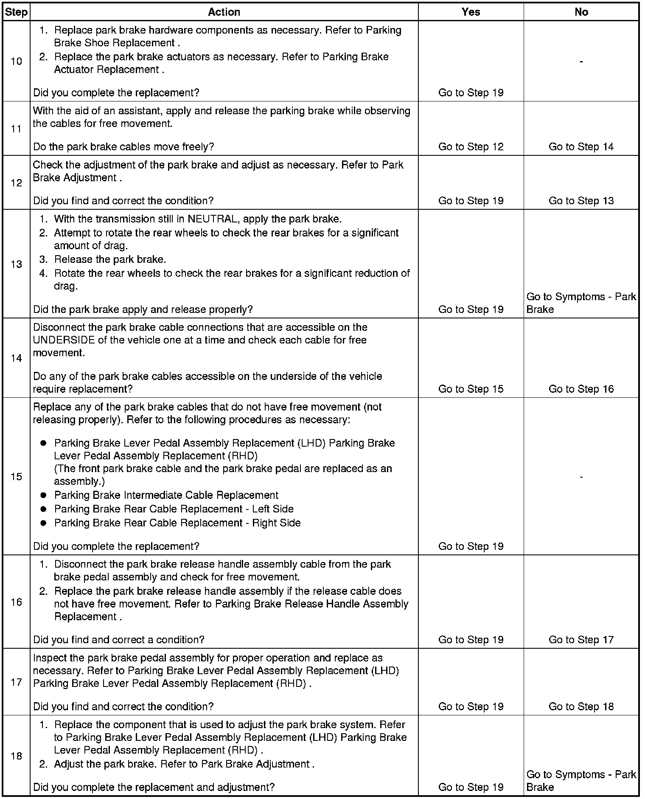
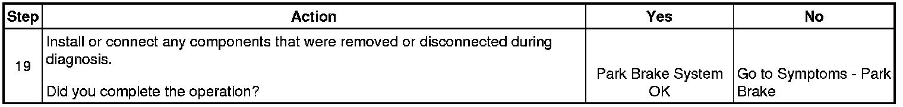

Operation CHARM
: Car repair manuals for everyone.
Home
>>
Cadillac
>>
2008
>>
SRX AWD V8-4.6L
>>
Repair and Diagnosis
>>
Brakes and Traction Control
>>
Parking Brake System
>>
Testing and Inspection
>>
Component Tests and General Diagnostics
>>
Park Brake System Diagnosis
Park Brake System Diagnosis
Park Brake System Diagnosis


